| Desirae and I met up in Charleston, SC for the
3rd show of our "let's see Hootie as many times as possible this
year" quest. We had a lovely sister weekend and then were
joined by some Casazza brothers - Eric & Larry. Desirae went
back for Fall break and I stayed a few days to continue touristing with
the guys. |
|
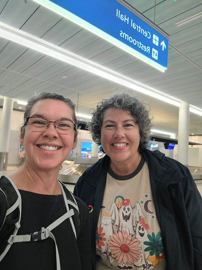 |
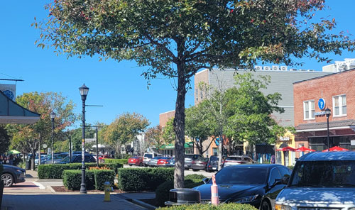 We stayed in a trendy part of North Charleston called Park Circle.
It was a very |
| Together again! Our flights came in pretty close together and the weekend began. | |
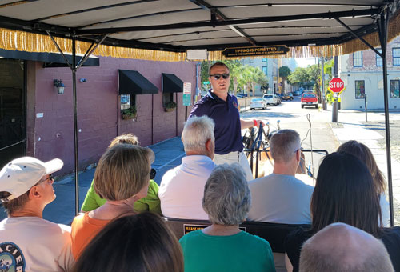 One of the highlights was a horse-drawn carriage tour, it was great. |
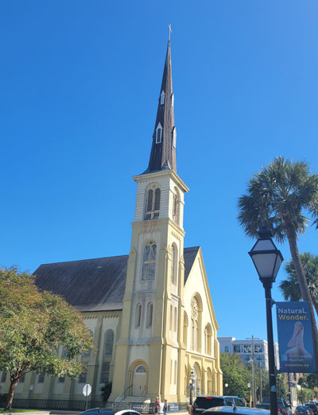 |
| You will see pictures of many old buildings, Charleston has so many beautiful old structures. |
|
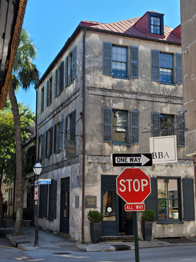 |
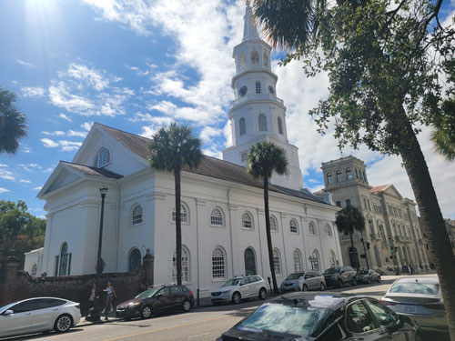 This is part of the "Four Corners of Law" - God's Law (the
church), State Law (the county |
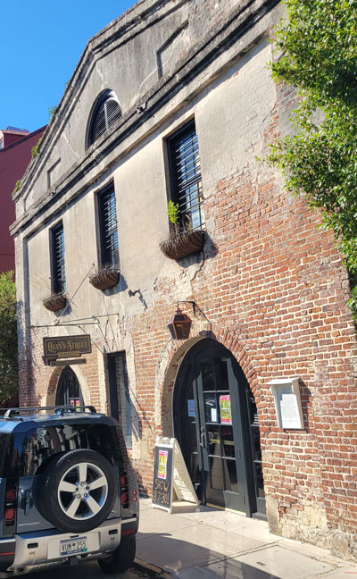 |
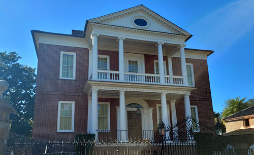 This building had an interesting story about a group of people being
barricaded. But I |
| They plastered over many of the brick buildings to save the mortar. | |
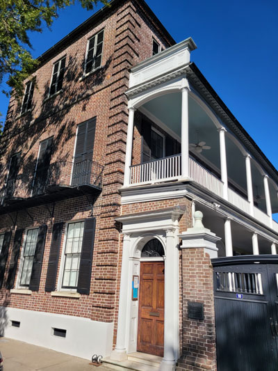 |
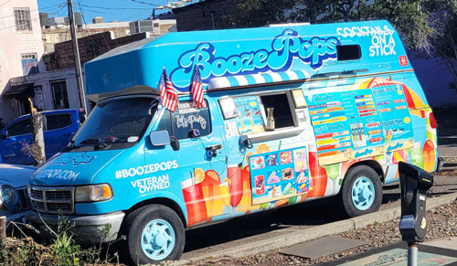 This cracked me up. Open containers are not allowed, but frozen
treats are OK so |
| This is a typical building style where the rooms are all on one side and a porch runs along the other, pointed toward the breeze for cooling. |
|
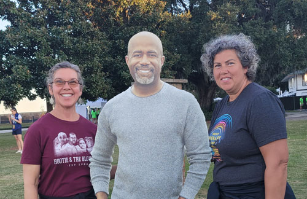 Day one of the two-day Riverfront Revival music festival. It's
something that Darius Rucker We got our picture taken with the real Darius Rucker a few years ago
and I can tell you |
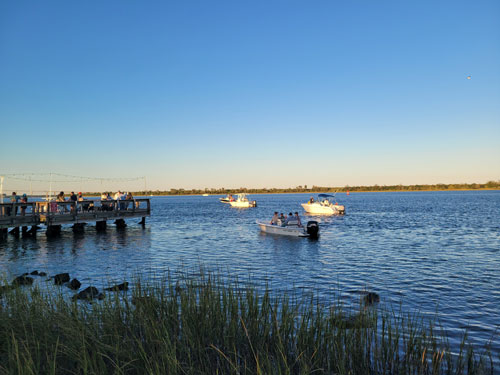 |
| People in boats enjoying the festival for free. | |
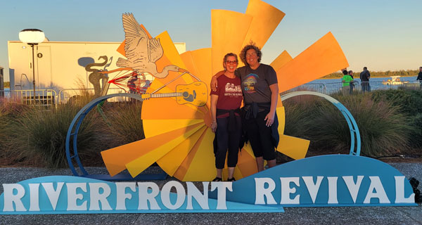 Woo hoo! |
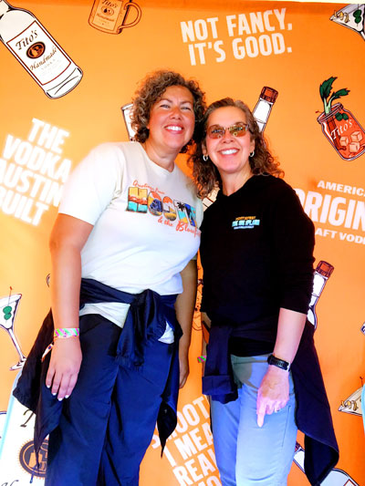 |
| Free photo booth if you don't mind the vodka backdrop. | |
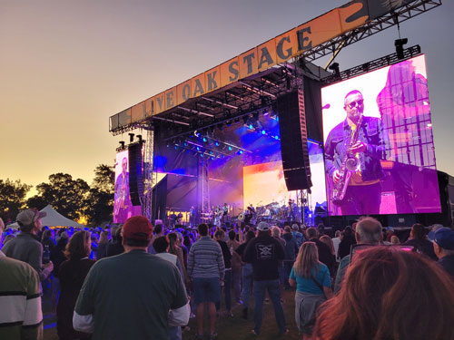 |
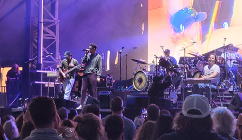 |
| The larger of the two stages. | The Revivalists, they are really good. Not a heartthrob in the bunch, but very talented. |
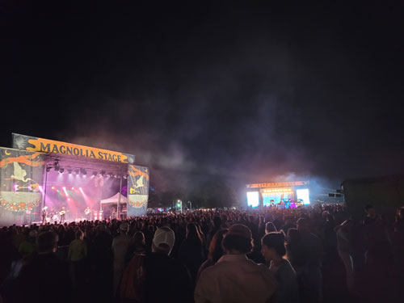 |
|
| A view of both stages and about half of the festival area. | The next day we went to the market for some shopping, and a little sightseeing. |
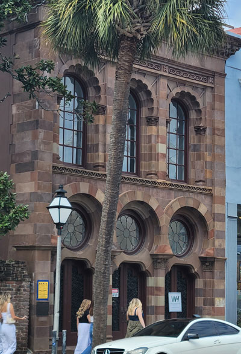 |
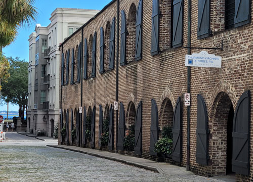 |
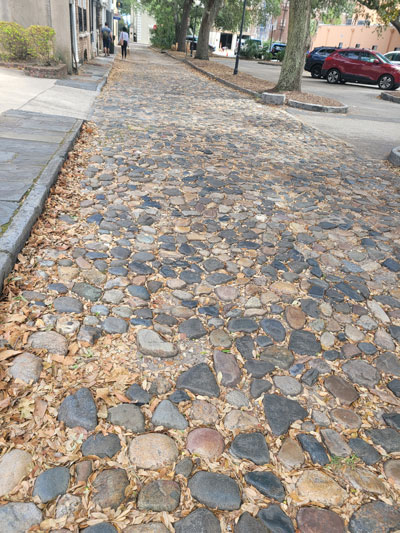 |
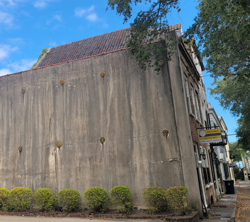 We learned on our tour that these circles are hooked to cables that pull
one wall toward |
| There are only a few of the original cobblestone streets left, which I can understand because they aren't very practical. |
|
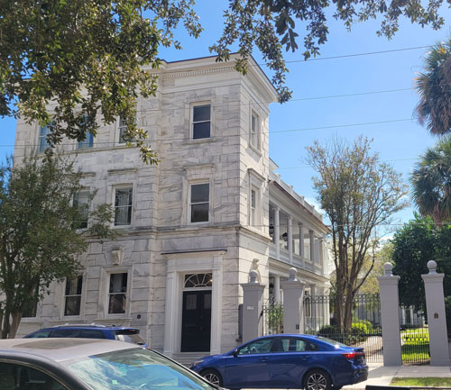 Here we stalk Darius Rucker's house. An Uber Eats driver pulled
up in that blue car and |
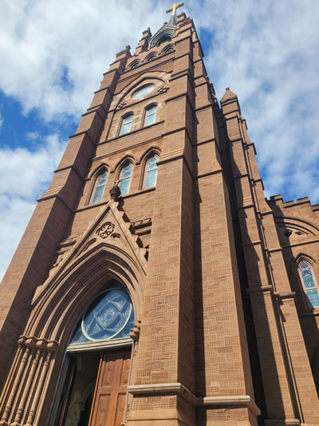 |
| Across the street is the impressive Cathedral of Saint John the Baptist | |
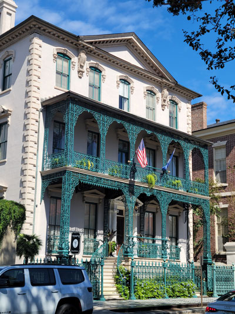 |
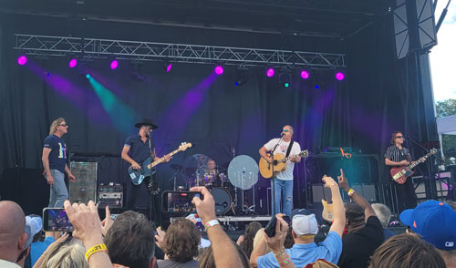 We arrived back at the festival in the afternoon, just in time to catch
Sister Hazel. Here, Mark Bryan from Hootie comes out to join them for a song. |
| Also across the street was this hotel with beautiful ironwork on the balcony. | |
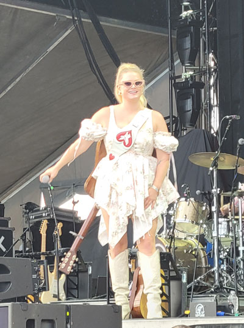 |
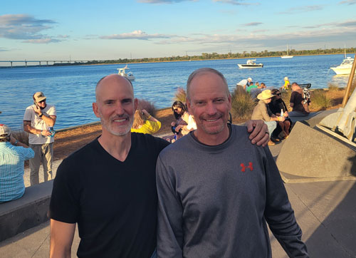 Surprise! The Casazza brothers have made it to Charleston and have joined us at last. |
| Hailey Whitters - she has some great songs, but I did not care for that dress. | |
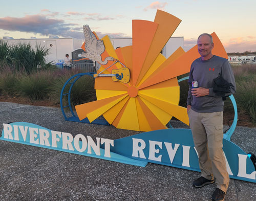 |
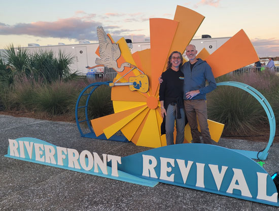 |
| Everyone needs their photo taken at the event sign. | |
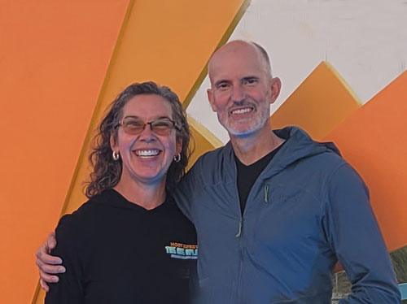 |
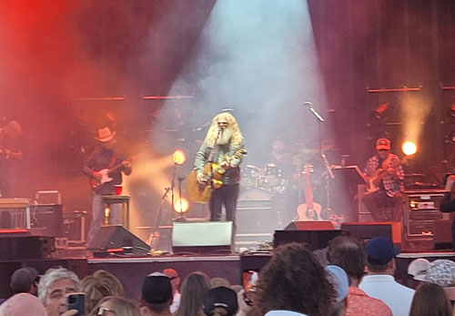 |
| We get so few photos taken together, I zoomed in on this one. | Jamey Johnson, he has some truly great songs, but they are mostly sad. |
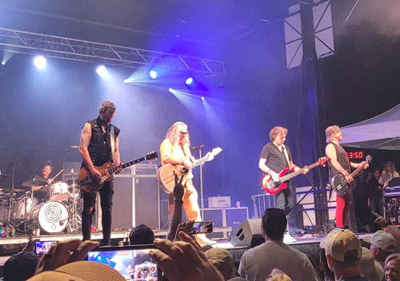 Woo hoo! Collective Soul put on a heck of a show again. They were awesome. |
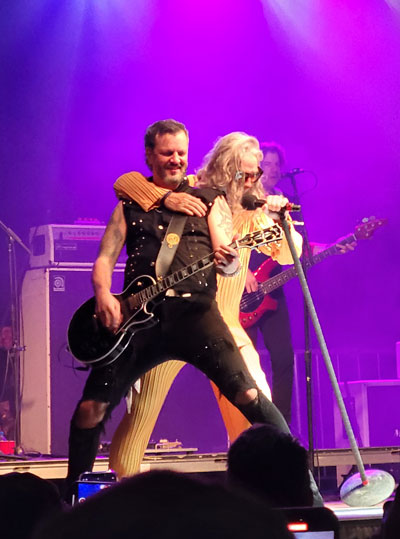 |
|
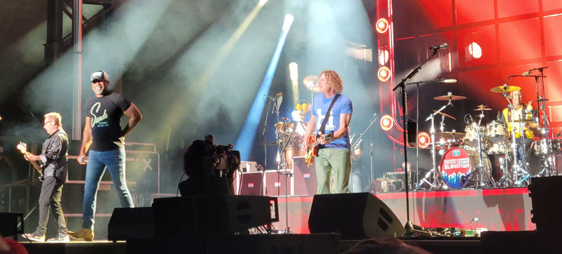 Then a sprint across the festival grounds to catch the main attraction - Hoote & the Blowfish! Dean Felber, Darius Rucker, Mark Bryan, and Jim "Soni" Sonifeld Thank you Desirae for giving up the last few songs of Collective Soul to save us a great spot!
|
|
|
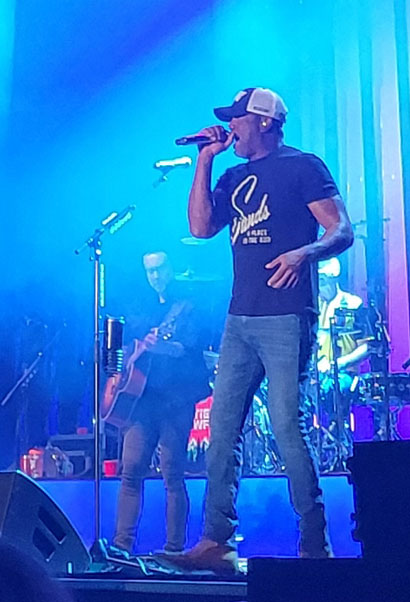 |
Darius with our friend VIP Lee in the background |
|
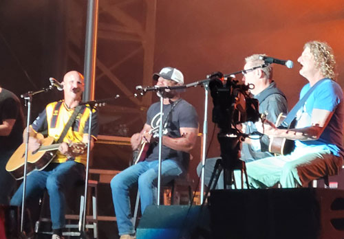 The guys during the acoustic part of the set. |
|
| Lee, really taking it to the accordian | |
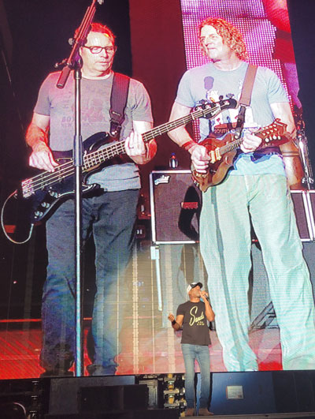 |
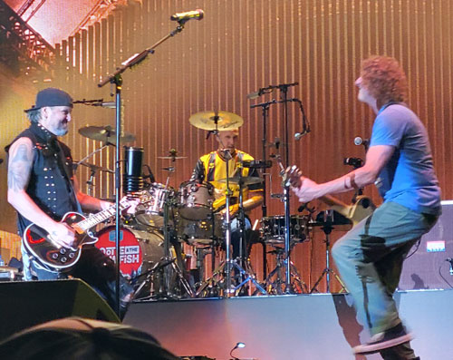 Two of the Collective Soul guys came out to join the fun. This is
lead guitarist |
| Darius with giant Dean & Mark behind him on the jumbotron. | |
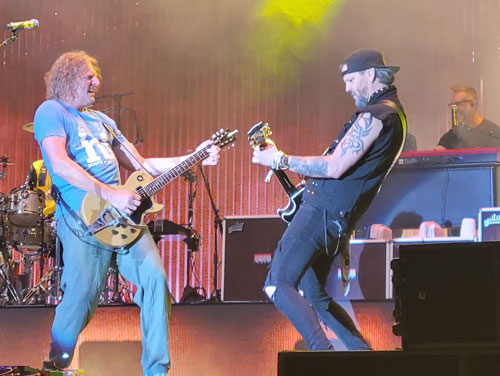 |
Oh man, not only is it the end - this is the very last Hootie show of the tour. Sadness! |
| Lead guitarists going to town | |
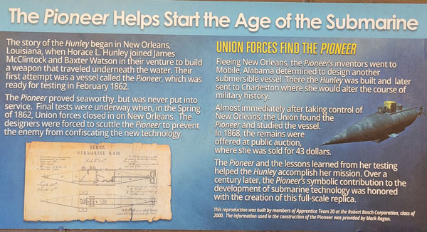 |
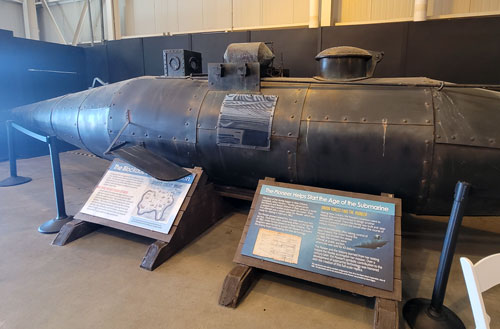 |
| The next day we got Desirae safely off to the airport and we started a day
of touring. We started at the Friends of the Hunley museum. The Hunley was the first submarine and Larry was a submariner, so he appreciated the history a lot. |
This was the Pioneer, a precursor to the Hunley. |
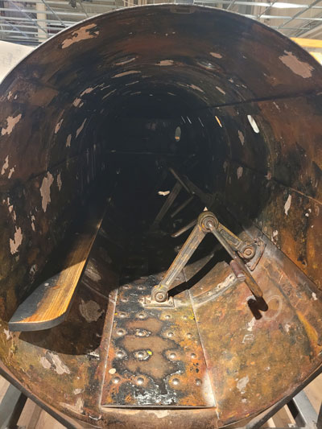 |
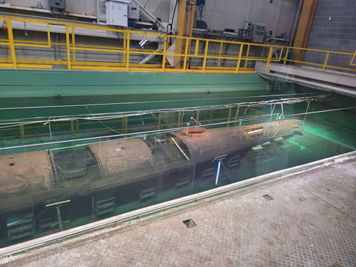 The actual Hunley. It's kept in special fluid to preserve it. The famous author Clive Cussler spent 14 years searching for
it. There is a nice summary of the wreck story here. |
| The first subs were powered by guys sitting on the bench and rowing.
It was hot, back-breaking, dangerous work. More Confederate soldiers |
|
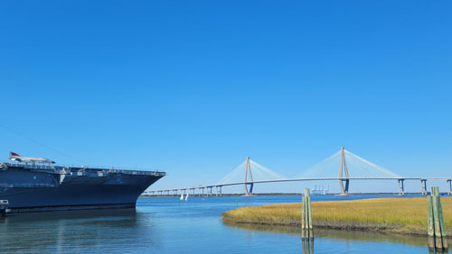 Next we're off to visit the USS Yorktown, a decommissioned aircraft
carrier that has been |
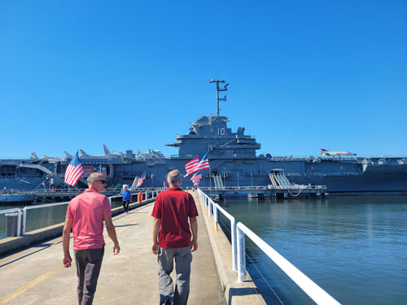 |
| Heading out to the Yorktown. | |
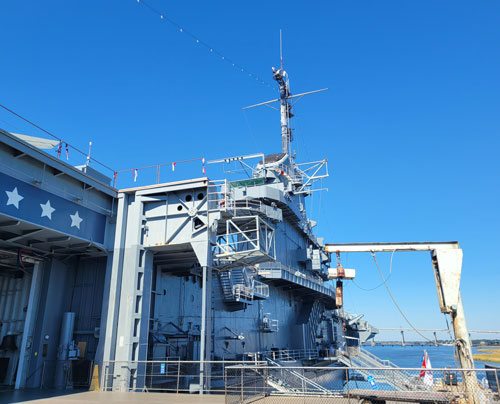 |
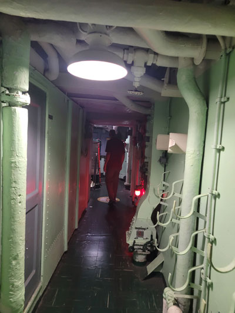 |
| We are way up already, but it just keeps going for story after story. It's huge! | Walking through these tight passages reminded Larry of life on a submarine. |
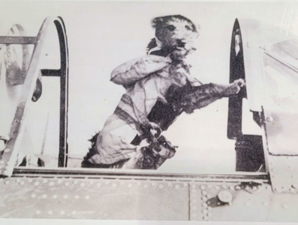 A fun story about the Yorktown's mascot dog. |
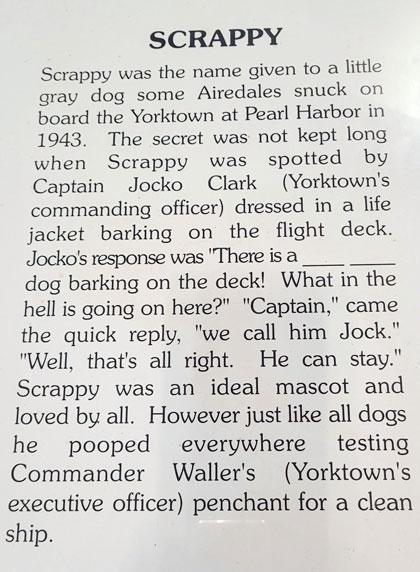 |
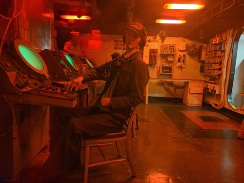 |
|
| One of the many displays that are all around the ship. We tried
to do the audio tour but didn't have the patience so we winged it. |
These guys are so often standing in the same pose! You'd almost think they were brothers... |
| Enjoying the sunshine on the huge flight deck. | Larry doing some Top Gun action. |
| More of the flight deck and downtown Charleston across the water. Also
Fort Sumpter is over there somewhere. |
There's also a battleship for touring but we were getting hungry so we
skipped that.
We ate at the restaurant you can see in the background, it was lovely. |
| The boys were too hungry to work up a smile. | I can show them how it's done, I'm still on my Hootie high. |
|
A nice view of the battleship, the Yorktown, and the bridge from our lunch spot. |
|
| Now we're in downtown Charleston where I led a walking tour of what I learned on my horse drawn carriage ride. We started at the Pineapple Fountain. |
|
| I asked Eric to pose, not realizing what I'd get. | Some of the fanciest houses are at the tip of the peninsula. |
| A fountain that I liked on a monument | |
| Another picture of that spiny fence topping. I bet that keeps
the fence-hoppers at bay! |
Larry wanted to see the St. John the Baptist cathedral so I got
another chance to stalk Darius Rucker's house. Not even an Uber Eats driver this time! |
|
The beautiful St. John the Baptist cathedral |
|
| We popped into a pub and enjoyed some time on the lovely patio with a live band. | We ate dinner at a taco place that had the funniest menu ever! |
| We walked around Charleston until we got sleepy. This was a beautiful courtyard we passed. | The next day was a big day, starting with the Angel Oak just outside of Charleston. |
|
It is believed to be between 400 and 500 years old. Everyone gets
quiet when you see it, |
|
| The tree is 65 feet high with a circumference of 26 feet. | |
| Next stop, Savannah Georgia! The oldest city in Georgia, it originally had
24 squares (parks), but now has 21. They are all beautiful and unique. |
We took a hop on/hop off trolley tour, which was a great way to see the town
and learn some history. |
|
We love those live oaks. |
|
| The Cathedral Basilica of St. John the Baptist - basilica means that it's big, which it is! | A glimpse of the inside, it feels like something you'd see in Europe. |
|
The organ was amazing! I would love to hear it played. |
|
| One of many beautiful stained glass windows. | |
| This is part of what was once a huge graveyard in the middle of town.
When they wanted more land, they just moved the headstones and built on top of the graves. (So said our tour guide.) |
There was a story about why the window and door frames were so crooked, it
was done intentionally, but now I've forgotten why! This lady does a much better job at capturing the beauty of Savannah than I did. |
| The gold-domed City Hall building was so impressive, we went inside. After passing through a metal detector, we were allowed to look around. |
The dome as seen from the inside. |
| We hadn't seen the ocean at all on this trip, so we headed to Tybee Island for a glimpse of it. |
Here we are with the light house. |
|
The ocean! We weren't dressed for a beach walk or else we'd have enjoyed that. |
|
| Soaking up the beach vibe. | |
|
Getting tired after a long day of touring. |
|
|
Desirae and I met two ladies at the Riverfront Revival festival who run
a Davis Produce east |
|
| After the 2 hour drive and a long rest, we headed into Park Circle for
dinner and a rousing hour at the arcade bar. They had my all-time favorite game, Area 51! |
|
| The next day we thought we'd stop in to a plantation and ended up spending 4 hours there. | This is Boone Hall Plantation, with a wonderful Live Oak Alley and a very
professional setup. They had so much to see and do and learn. |
| The plantation house is much newer than the plantation itself. It's
had a long and interesting history of ownership, including some kind of Russian bigwig. |
On the carriage tour, there were alligators a plenty in the plantation's lake. |
|
I was told that the slave quarters very rarely survive in today's
plantation museums. |
|
| Eric made a friend. | |
| This shows the ladder up to a sleeping loft. | |
|
|
|
| They have a dock on the inland waterway that they used for shipping. Now it's a beautiful spot for corporate events and weddings. |
|
| A rare look at the house and grounds with no one on it. | |
|
The gardens |
|
| The smokehouse | |
|
Larry & I with the lovely oak alley. |
|
|
Next stop - downtown Charleston for a fantastic meal. The rooftop
at the |
|
| Eric on vacation. Two pairs of glasses, happy face in place. | |
| Next up - Top Golf! It was Larry's first time, but it won't be his last. | |
| On our last evening we wanted to visit a rooftop bar in downtown Charleston. Here we are in the swanky hotel The Vendue. |
|
|
The view from the rooftop
|
|
| This was the description of a beer on the menu that totally confused
me. I thought someone was describing the beer as a mixture of dirt and water with a bad odor! |
|
|
The next morning I flew out early and the boys headed off on their road trip to Tennessee. |
|
|
A look at the building where we hung out. |
|
|
As we went in for landing in Kalispell, I realized I had seen the last
sunshine I was |
|
| The brothers in Tennessee. They visited Rusty & family, saw
an underground waterfall, visited Cooter's Dukes of Hazzard museum, saw Steve Earle and Ricky Skaggs at the Grand Ole Opry, and much more. |
|